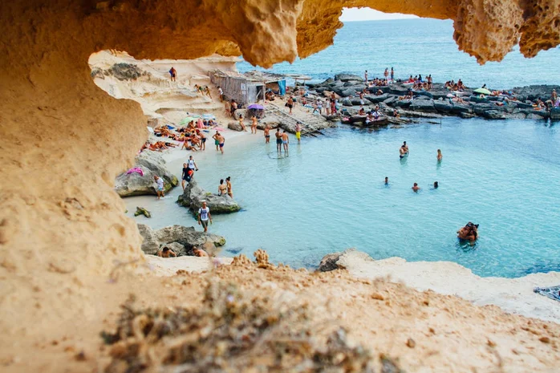

Франц улс
Сүүлийн жилүүдэд дэлхий даяар аялах сонирхолтой жуулчдын тоо өсч байгаа нь аялал жуулчлалын салбарт эерэг уур амьсгалыг авчраад байгаа билээ. Европын орнуудад л гэхэд 10 евро бүрийн 1 нь жуулчдаас олсон орлогод тооцогддог байна. Жил бүр хамгийн их жуулчин очдог орнууд юу вэ? Үүнийг тооцохдоо нисэх онгоцны тасалбарын борлуулалт болоод бэлэг дурсгалын худалан авалт, худалдаа хийсэн байдал зэрэг хэд хэдэн хүчин зүйлсийг хамааруулан гаргадаг байна.
Америкийн нэгдсэн улс
Ширэнгэн ой мэт шилэн барилгууд дунд түм түжигнэж, бум бужигнасан Нью-Йорк, Лос Анжелас, Лас Вегас хотоос эхлээд АНУ-д үзэх зүйл олон. Тус улсын нийт 29 мужид аялал жуулчлалын чиглэлээр ажиллагсдын тоо хамгийн өндөр байдаг. Америкийн нэгдсэн улсыг жил бүр 74.8 сая жуулчид зорьдог. Эдгээрийн ихэнх нь Мексик, Канад, Англи зэрэг орнуудаас ирдэг байна.
Испани улс

Испани улсын дотоодын нийт бүтээгдэхүүний 11% нь аялал жуулчлалын салбараас бүрддэг. Жил тутам ойролцоогоор 65-70 сая жуулчид Испанийн үзэсгэлэнт газруудыг үзэхээр ирдэг. Ихэвчлэн Англи, Франц, Итали, Герман зэрэг улсын жуулчид Испанийн түүхэн хотууд болох Барселона, Мадрид зэргийг сонирхохын зэрэгцээ Испани улсын өвөрмөц, соёл заншлыг бахдан буцдаг. Тус улсын нийт 13 хот нь Юнескогийн соёлын өвд бүртгэлтэй гэдгээрээ алдартай.
Англи улс
Англи улсын нийслэл Лондон хотод л гэхэд өнгөрсөн оны байдлаар 31.5 сая жуулчид зочилсон бол цаашид 2020 он гэхэд энэхүү тоо 35 хувиар өсөх магадлалтай байна. Хатан хааны төрсөн өдөр болон олимп зэрэг спортын наадмын үеэр Англи улсыг зорих жуулчдын тоо эрс өсдөг байна. Тус улс аялал жуулчлалын салбараас жил бүр 18 тэр бум долларын ашиг олдог.
Хятад улс
Цагаан хэрмийн эх нутаг болсон Хятад улсад Шаолины сүм, Гуангшоу усан хүрхрээ, Ариун дагшин уулс гээд үзэх газар нутаг мөн л олон. Байгаль болон соёлын өвөрмөц бүтэцтэй Хятад улсыг зорих жуулчны тоо олон. Жил бүр 55,6 сая гадны жуулчид Хятал улсад очдог. Дэлхийн худалдааны төв байгуулагдсан нь Хятад улс руу очих жуулчдыг тоог улам ихэсгэж байгаа ба 2020 он гэхэд Хятад улс аялал жуулчлалын салбараар дэлхийд тэргүүлдэг болох магадлал маш өндөр байна.
Итали улс
Итали улс Соёлын гайхалтай төвүүд, уламжлалт хоол, загварын ордон, далайн эргийн амралтын газраа түшиглэсэн Итали улсын аялал, жуулчлалын салбар өнгөрсөн жил 45,7 тэрбум ам.долларын ашигтай ажиллажээ. Италийн 44 дурсгалыг дэлхийн соёлын өвд бүртгэсэн юм.Хятад улс Хятад улсад өнгөрсөн жил 50 сая жуулчин зочилжээ. Жуулчдын очихыг хүсдэг орны жагсаалтын дөрөвдүгээрт бичигддэг. Тус улс аялал, жуулчлалаас 40,8 тэрбум ам.долларын ашиг олжээ.